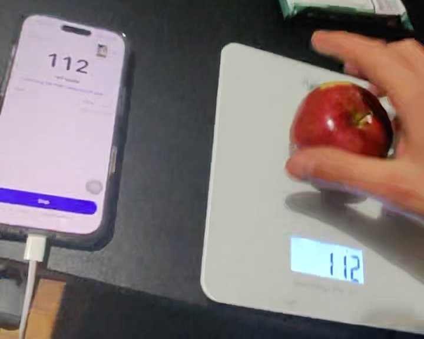
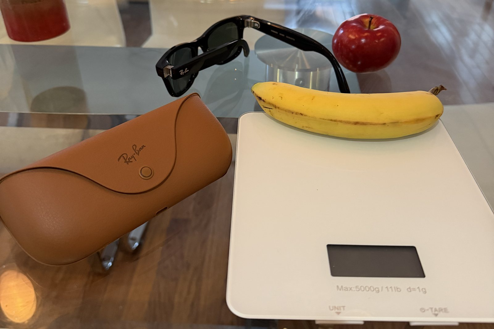

Any digital scale
Use the scale you already own. The number on its display is the weight, so there is nothing to pair and no new scale to buy.
Logging food means typing every meal, and the typing kills the habit.
Wear Ray-Ban Meta glasses, put the food on any digital scale, and it goes to Apple Health. Hands free.

How it works
Typing apps make you enter every food. Photo apps guess the portion from a picture. itlogs.food reads the number your scale already shows.
Use the scale you already own. The number on its display is the weight, so there is nothing to pair and no new scale to buy.
The glasses see the food and the display. Muse Spark names the food and reads the grams. For a packaged food, it reads the wrapper and searches the web for the label. For a dish it does not know, it finds typical values.
No phone in your hand, no photo to take, nothing to type. Move on to the next food.
The food, the grams, the calories and the macros. You check the meal, then send it with one tap.
Compare
| itlogs.food | Qalzy | Photo apps | Typing apps | Smart scales | |
|---|---|---|---|---|---|
| What you need | Ray-Ban Meta glasses, any digital scale, an iPhone and, today, a Mac | Its own scale | A phone | A phone | Its own scale and a phone |
| Weighs, does not estimate | |||||
| Names the food with AI | |||||
| Weighs and names in one step | |||||
| Works with the scale you already own | |||||
| Hands free while weighing | |||||
| No phone in your hand while weighing | |||||
| Goes to Apple Health | |||||
| Names packaged food and finds its label |
yes partly or it varies no
In itlogs.food you tap Start, Stop and send on the phone, and nothing for each food. It reads a packaged food's wrapper, and the first lookup of a product takes 30 to 60 s. Qalzy's column comes from its own guide, read 2026-NOVEMBER-04: you press a button on the scale for each scan, or twice for a Live Scan.
Examples of the other columns. Photo apps: Cal AI, Appediet, MyFitnessPal and Lose It!, the four in the study below. Typing apps: Cronometer, MyFitnessPal and Lose It!. Smart scales: Etekcity and Renpho. The dots describe that way of logging, not everything a given app does.
Four popular photo apps logged calories and fat about one-third too low, across about 100 meals measured to 0.1 g. Study led by an NIH fellow, presented at the American Society for Nutrition's annual meeting.
The log
Every line carries the grams, the calories and protein from a nutrient table. You check the list, then one tap sends it to Apple Health.
total236 g169 kcal1.6 g protein
In the kitchen

“Every other health stream fills itself: the ring, the watch, the body scale. Food was the one log still typed by hand. The typing is what kills the habit.”
Weighing, filmed during a test on 2026-NOVEMBER-03. The log above comes from a later run.
Built on
The code, every recorded run, and a replay of real sessions you can run with no glasses and no key.